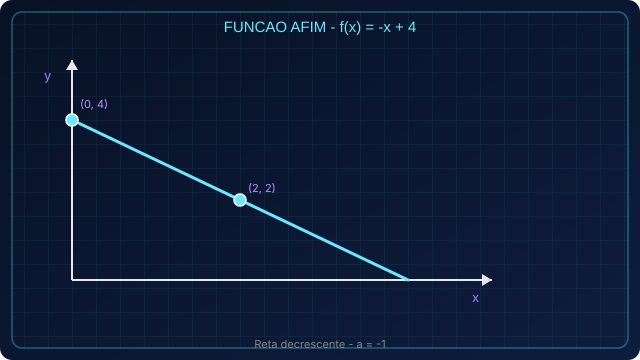

IA Generativa
Cria textos, imagens, áudio e ideias com base em exemplos anteriores.
COLÉGIO COMETA // TURMA 2° MARTE // 2026
Este projeto apresenta o conceito de IA, explica como ela funciona e mostra como estudantes podem usá-la a favor do aprendizado sem riscos.
A Inteligência Artificial (IA) é uma área da tecnologia que cria sistemas capazes de realizar tarefas que normalmente exigem inteligência humana, como compreender linguagem, reconhecer padrões e resolver problemas. A IA não pensa como uma pessoa: ela analisa dados e calcula respostas prováveis com base no que aprendeu.
Cria textos, imagens, áudio e ideias com base em exemplos anteriores.
Encontra padrões em dados para ajudar em previsões e decisões.
Presente em tradutores, recomendações, mapas e assistentes virtuais.
Modelos de IA são treinados com grandes volumes de dados. Durante o treinamento, aprendem padrões, relações e estruturas a partir de exemplos.
Quando você faz uma pergunta, a IA gera uma resposta com base nos padrões aprendidos. Ela pode ajudar muito, mas também pode errar.
A IA funciona melhor com supervisão humana. É essencial conferir informações, comparar fontes e tomar decisões com pensamento crítico.
Nasce o termo "Inteligência Artificial" na conferência de Dartmouth.
O computador Deep Blue vence um campeão mundial de xadrez.
AlphaGo supera jogadores de elite em um jogo considerado muito complexo.
Ferramentas de IA apoiam estudo, trabalho e criatividade em escala global.
A IA pode ser uma grande aliada nos estudos quando usada com responsabilidade e limites claros.

Use IA para resumir conteudos, criar perguntas de revisao, montar planos de estudo e receber explicações em linguagem simples.
Experimente: "Explique este tema como se eu tivesse 15 anos".

Não dependa totalmente da IA. Evite copiar respostas prontas: use o apoio da ferramenta e depois escreva com suas próprias palavras.
Regra 70/30: 70% conteudo seu, 30% apoio da IA.

Proteja-se: não compartilhe dados pessoais, senhas ou fotos privadas e sempre confirme informações importantes em fontes confiáveis.
Nunca envie CPF, endereco, telefone ou senha em ferramentas de IA.
Nesta área você encontra conteúdos de matemática do ensino médio e orientações para usar prompts (instruções escritas) de forma clara em ferramentas como ChatGPT. Um bom prompt diz o que você quer, para quem é a explicação e pede exemplos e verificação.

Uma função afim tem forma f(x) = ax + b, com a e b reais. O coeficiente a indica a inclinação da reta; b é onde a reta corta o eixo y (ordenada na origem). O gráfico é sempre uma reta no plano cartesiano.
Dica de prompt: diga que você é aluno, peça linguagem adequada, peça definições, um exemplo com números, ideia do gráfico e um exercício com resolução comentada — assim a IA organiza melhor a resposta.
Seja f(x) = -x + 4. Calcule f(0), f(2) e diga se a reta é crescente ou decrescente.

Uma função quadrática tem forma f(x) = ax² + bx + c, com a ≠ 0. O gráfico é uma parábola. Se a > 0, a concavidade volta para cima; se a < 0, para baixo. O vértice é o ponto de máximo ou mínimo; os zeros da função (se existirem) são onde a parábola cruza o eixo x.
Dica de prompt: peça esquema (concavidade, vértice em palavras simples) e peça para relacionar com o gráfico; evite pedir só “resolva” sem contexto.
Para f(x) = x² - 5x + 6, determine os zeros da função (valores de x para os quais f(x) = 0).
Uma equação do 1º grau na incógnita x pode ser reduzida a ax + b = 0 (com a ≠ 0). Resolvemos isolando x: operações iguais dos dois lados mantêm a igualdade. Em um sistema com duas equações e duas incógnitas, buscamos valores que satisfaçam as duas ao mesmo tempo (por substituição ou adição, conforme o professor orientar).
Dica de prompt: peça para mostrar cada passo da igualdade e não apenas o resultado final.
Resolva a equação: 5x + 9 = 2x - 3.
Porcentagem “por cento” compara uma parte com 100: por exemplo, 25% de 200 é a mesma ideia que (25/100) × 200. A regra de três relaciona grandezas proporcionais: montamos uma tabela com pares correspondentes e isolamos o valor desconhecido.
Dica de prompt: peça para explicar quando usar regra de três simples e um exemplo com porcentagem no cotidiano (desconto, nota, tempo).
a) Calcule 12% de 250.
b) Se 8 horas correspondem a 100% de uma carga de trabalho, quantas horas correspondem a 35%?
Item (a) — 12% de 250
Item (b) — 35% de 8 horas
Não. A IA apoia tarefas, mas criatividade, ética e pensamento crítico continuam humanos.
Não. Sempre verifique em livros, professores e fontes confiáveis.
Use IA para entender melhor, praticar e revisar, mas produza suas respostas finais.